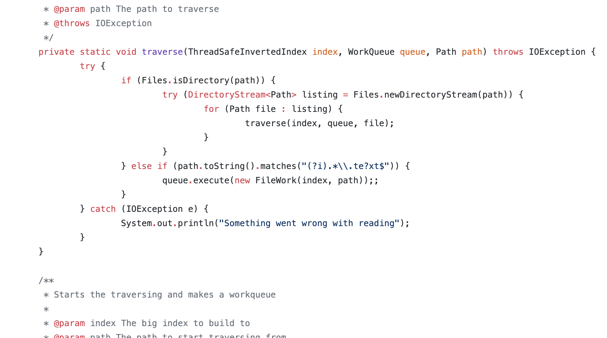
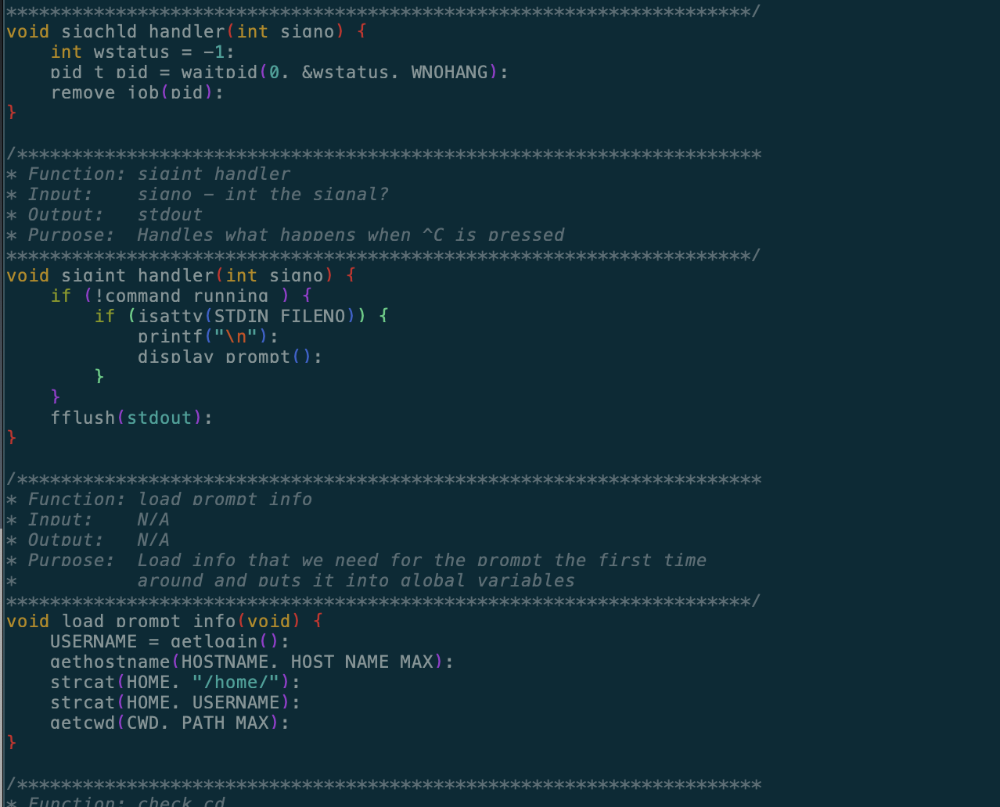

Created a Search Engine backend utilizing frameworks and libraries such as Apache Commons Lib and log4j2
Start-date: Aug 2018
Status: Still making changes
Languages used: Java 10
Libraries/API used: Apache Common, Apache Text
Created a Shell using the standard C library
Start-date: March 2019
Status: Finished
Languages used: C lang
